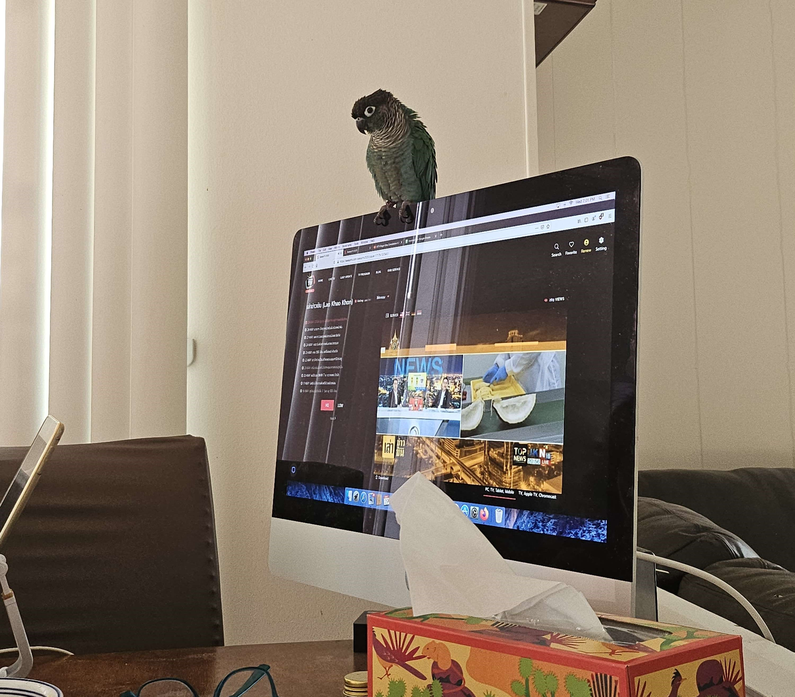

Birds are not like dogs or cats, they are prey animals, and have different needs than those two. When you think of a pet bird you might
think of a parrot, but most parrots are undomesticated, not that different from their wild counterparts. Domesticated birds are pigeons
or chickens. These birds are bred for human use or were bred for human use. With the rise of communication technology pigeons have
become obsolete and have been abandoned by people in cities. They can be pet on the back, which you cant do on undomesticated parrots.
With undomesticated parrots, you can only pet on their head and neck, their bodies are reserved only for mates and touching them there
can have the bird mistake you as their mate and will get them hormonal and frustrated.

There are many breeds of both domesticated and undomesticated birds and they all have different needs. I have a green cheek conure,
which is undomesticated. I had them for about 3 years now and got them when they were around 6 months. Getting a bird is NOT FOR EVERYONE.
A lot of species will live a very long time, mine will live up to 30 years, and some will live up to 80. You will have to change your
lifestyle drastically, like getting a child wielding a knife. They are loud, destructive, messy, too smart for their own good, and expensive.
They will bite your wooden cabinets, wires, you, steal your food, wake you up early, jump on your keyboard and make you lose a game.
You have to get rid of all Teflon pans or scented stuff because their lungs are so sensitive and if you don’t catch it by the annual
vet visit they can die, and you wont even know because since their prey animals if they are sick then they hide it really well! So yeah,
not for everyone.
Taking care of a bird
Deenie Vichitpap
As I’ve said before, birds need a different kind of care compared to cats or dogs, their lungs are incredibly sensitive, and any bad
things in the air will stay in their system a lot longer then ours. Fun fact before the machines to detect toxic gasses were invented,
miners would take birds down into the mines. If the birds are unconscious or dead, then it was probably time to get out. So no air
fresheners, no candles, no cleaning supplies with a strong odor, no Teflon pans and no self cleaning ovens. There are lots of people
that do this because “it was only for a short time its fine” and then their birds are dead because birds hide their sickness really well.
These little dinosaurs are also REALLY FREAKING SMART. Lonnie used to have a cage that lasted a year before they figured out how to
open and escape, then we put a ruler on the door to barricade it. They figured out how to get pass that too. I had to buy a cage with
a whole latch… however with this intelligence comes bonding moments. My dog would never recognize anyone through a phone call, but
Lonnie would recognize my parents or friends through phone calls. When my friend started going on testosterone, his voice deepened
and Lonnie didn’t recognize it anymore until they met up in real life again. They also learned some words, green cheek conures aren’t
good speakers but it sounds pretty clear to me. My favorite phrase that they do is “baby bird” cause when I say it I drag out the ‘r’
and they copied that. They also learned how to give kisses because I gave them so much. And to be fair, their little face is very smoochable.
They even make the little ‘chup’ sound its so cute! (Note that human saliva is toxic to birds so be careful when giving kisses)
Bad Items
Why
Cloth Tents
Similarly to petting them on the back, these can trigger
hormonal issues in a bird and cause them to get aggressive.
Rope Perches
These can be fine but if there are frayed ends, a bird might ingest
those fibers and it will block their digestion track, requiring surgery.
Straight wooden perches
Having a couple is fine but provide other perches that
require a birds feet to position in different ways, such as branch perches.
Mirrors
Birds are smart, but when they see another bird in the mirror they
cant recognize its themselves and this causes lots of stress for them.